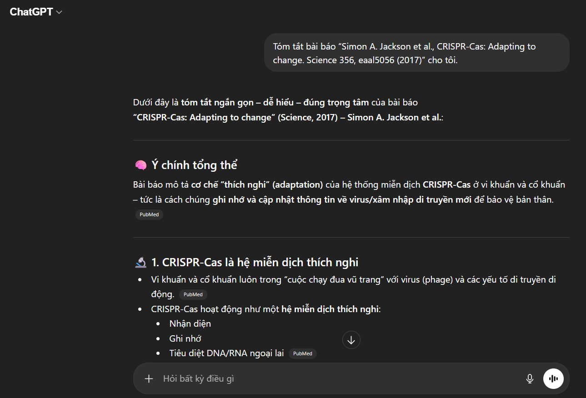
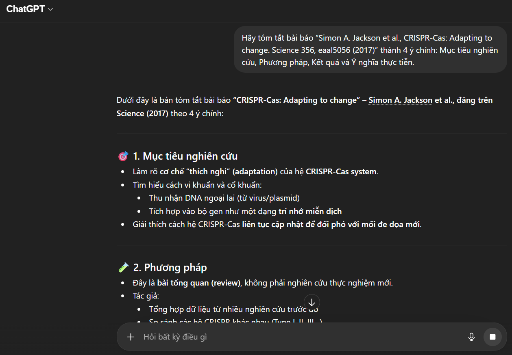
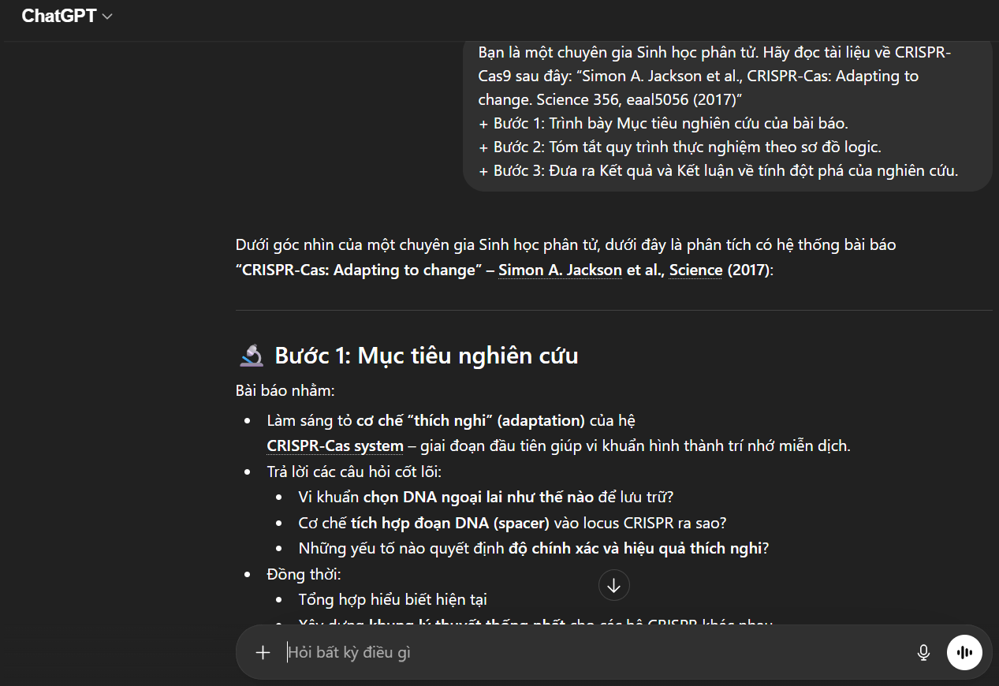
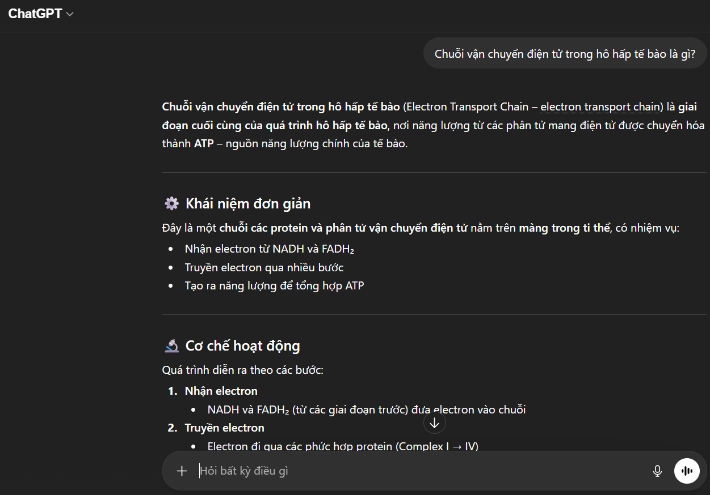
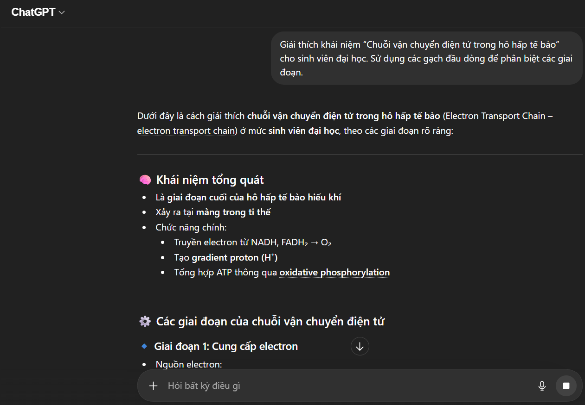
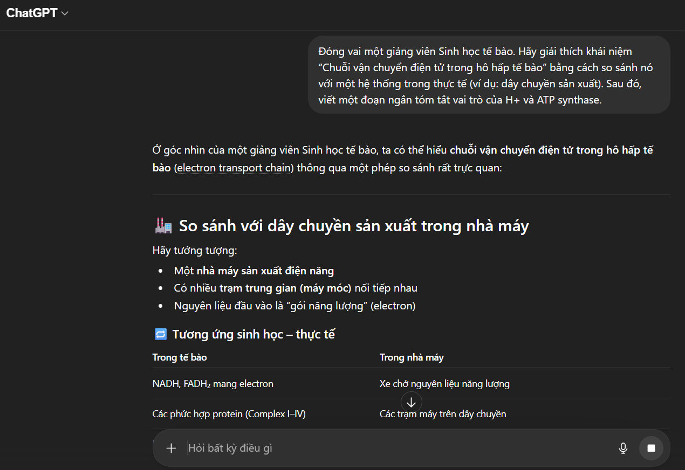
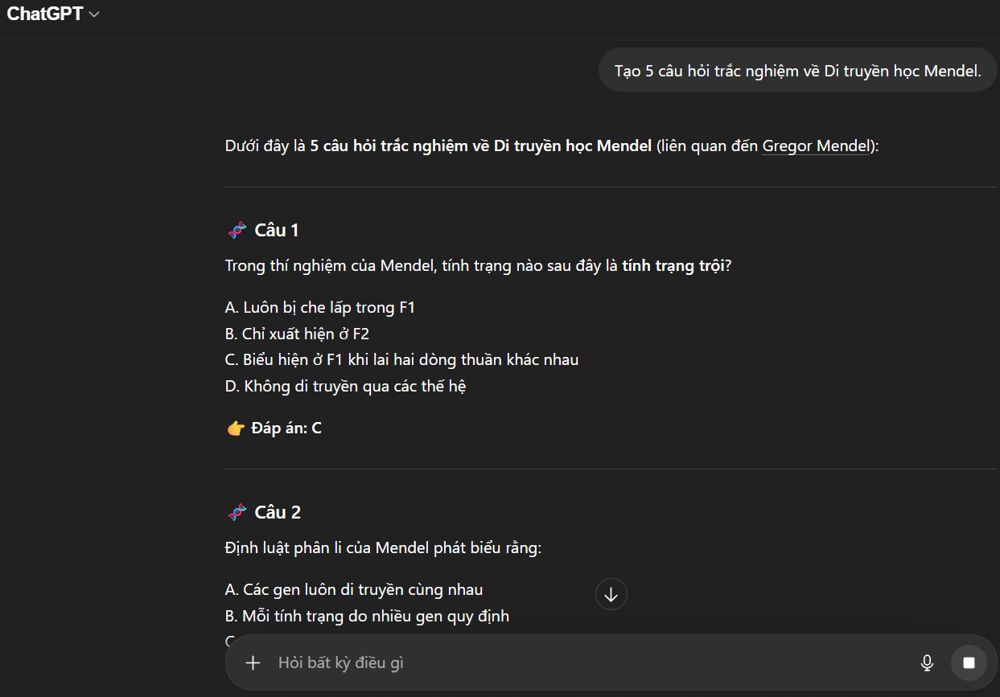
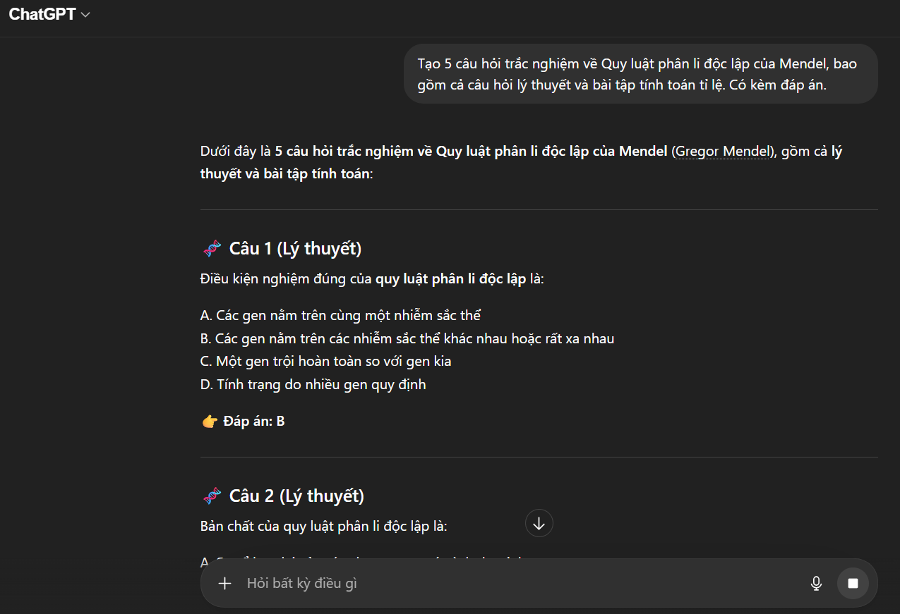
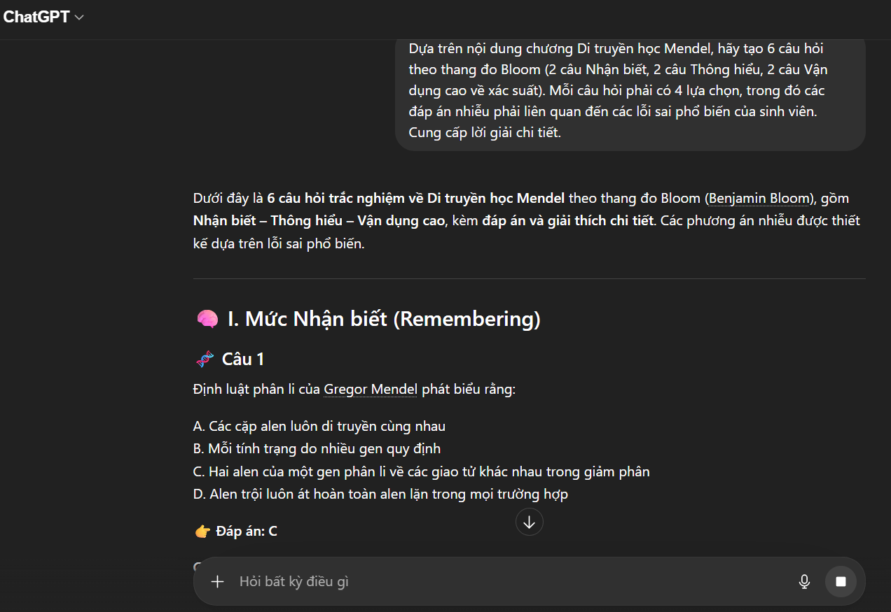

Bài tập 2: Viết Prompt hiệu quả
Thiết kế cấu trúc Prompt chuyên sâu theo mô hình chuẩn hóa để điều hướng AI phân tích cơ sở dữ liệu di truyền học hiệu quả.
Sinh viên: Phạm Đình Khánh Đoan
|
MSV: 25001395
|
Khoa Sinh học - HUS-VNU
I. PHÂN TÍCH TÁC VỤ HỌC TẬP
1. Tóm tắt một bài đọc/tài liệu học thuật (Ví dụ: Bài báo về chủ đề: Cơ chế CRISPR-Cas9)
- •Mục tiêu: Trích xuất thông tin cốt lõi (vấn đề, phương pháp, kết quả) từ một văn bản dài, phức tạp.
- •Thách thức: Tài liệu sinh học thường dài và chứa nhiều dữ liệu. Thách thức là phải giữ được phương pháp nghiên cứu và kết quả cốt lõi mà không làm mất đi tính logic.
2. Giải thích một khái niệm phức tạp (Ví dụ: Khái niệm Chuỗi vận chuyển điện tử trong hô hấp tế bào)
- •Mục tiêu: Làm sáng tỏ các thuật ngữ trừu tượng thành kiến thức dễ tiếp thu.
- •Thách thức: Cân bằng giữa tính hàn lâm của các thuật ngữ chuyên ngành Sinh học và tính trực quan, dễ hiểu. Đòi hỏi phải sử dụng các phép ẩn dụ hợp lý mà không làm sai lệch bản chất.
3. Tạo bộ câu hỏi ôn tập cho một chủ đề (Ví dụ: Tạo bộ câu hỏi ôn tập chủ đề Di truyền học Mendel)
- •Mục tiêu: Thiết kế công cụ kiểm tra kiến thức bao quát nhiều câu hỏi ở nhiều mức độ (biết, hiểu, vận dụng).
- •Thách thức: Các prompt đơn giản thường chỉ tạo ra câu hỏi ghi nhớ mức độ thấp (Fact-based). Cần tạo ra các câu hỏi phân tích, suy luận và cung cấp đáp án có giải thích chuỗi tư duy (Chain-of-Thought).
II. XÂY DỰNG CÁC PHIÊN BẢN PROMPT
1. Tóm tắt một bài đọc/tài liệu học thuật (Ví dụ: Bài báo về chủ đề: Cơ chế CRISPR-Cas9)
- •Cơ bản: Tóm tắt bài báo “Simon A. Jackson et al., CRISPR-Cas: Adapting to change. Science 356, eaal5056 (2017)” cho tôi.
- •Cải tiến: Hãy tóm tắt bài báo “Simon A. Jackson et al., CRISPR-Cas: Adapting to change. Science 356, eaal5056 (2017)” thành 4 ý chính: Mục tiêu nghiên cứu, Phương pháp, Kết quả và Ý nghĩa thực tiễn.
- •Nâng cao: Bạn là một chuyên gia Sinh học phân tử. Hãy đọc tài liệu về CRISPR-Cas9 sau đây: “Simon A. Jackson et al., CRISPR-Cas: Adapting to change. Science 356, eaal5056 (2017)”
- •Bước 1: Trình bày Mục tiêu nghiên cứu của bài báo.
- •Bước 2: Tóm tắt quy trình thực nghiệm theo sơ đồ logic.
- •Bước 3: Đưa ra Kết quả và Kết luận về tính đột phá của nghiên cứu.
2. Giải thích một khái niệm phức tạp (Ví dụ: Khái niệm Chuỗi vận chuyển điện tử trong hô hấp tế bào)
- •Cơ bản: Chuỗi vận chuyển điện tử trong hô hấp tế bào là gì?
- •Cải tiến: Giải thích khái niệm “Chuỗi vận chuyển điện tử trong hô hấp tế bào” cho sinh viên đại học. Sử dụng các gạch đầu dòng để phân biệt các giai đoạn.
- •Nâng cao: Đóng vai một giảng viên Sinh học tế bào. Hãy giải thích khái niệm “Chuỗi vận chuyển điện tử trong hô hấp tế bào” bằng cách so sánh nó với một hệ thống trong thực tế (ví dụ: dây chuyền sản xuất). Sau đó, viết một đoạn ngắn tóm tắt vai trò của H+ và ATP synthase.
3. Tạo bộ câu hỏi ôn tập cho một chủ đề (Ví dụ: Tạo bộ câu hỏi ôn tập chủ đề Di truyền học Mendel)
- •Cơ bản: Tạo 5 câu hỏi trắc nghiệm về Di truyền học Mendel.
- •Cải tiến: Tạo 5 câu hỏi trắc nghiệm về Quy luật phân li độc lập của Mendel, bao gồm cả câu hỏi lý thuyết và bài tập tính toán tỉ lệ. Có kèm đáp án.
- •Nâng cao: Dựa trên nội dung chương Di truyền học Mendel, hãy tạo 6 câu hỏi theo thang đo Bloom (2 câu Nhận biết, 2 câu Thông hiểu, 2 câu Vận dụng cao về xác suất). Mỗi câu hỏi phải có 4 lựa chọn, trong đó các đáp án nhiễu phải liên quan đến các lỗi sai phổ biến của sinh viên. Cung cấp lời giải chi tiết.
III. THỬ NGHIỆM VÀ SO SÁNH KẾT QUẢ
Thử nghiệm các prompt với ChatGPT:
- •Tác vụ 1:
- •Cơ bản:

Hình 3.1: Ảnh chụp minh chứng kết quả thực hành bài tập 3
- •Cải tiến:

Hình 3.2: Ảnh chụp minh chứng kết quả thực hành bài tập 3
- •Nâng cao:

Hình 3.3: Ảnh chụp minh chứng kết quả thực hành bài tập 3
- •Tác vụ 2:
- •Cơ bản:

Hình 3.4: Ảnh chụp minh chứng kết quả thực hành bài tập 3
- •Cải tiến:

Hình 3.5: Ảnh chụp minh chứng kết quả thực hành bài tập 3
- •Nâng cao:

Hình 3.6: Ảnh chụp minh chứng kết quả thực hành bài tập 3
- •Tác vụ 3:
- •Cơ bản:

Hình 3.7: Ảnh chụp minh chứng kết quả thực hành bài tập 3
- •Cải tiến:

Hình 3.8: Ảnh chụp minh chứng kết quả thực hành bài tập 3
- •Nâng cao:

Hình 3.9: Ảnh chụp minh chứng kết quả thực hành bài tập 3
Bảng so sánh các prompt:
| Tác vụ và Cấp độ Prompt | Đặc điểm | Độ sâu và Chất lượng | Lý do hiệu quả | Đánh giá |
|---|---|---|---|---|
| 1. Tóm tắt tài liệu ( Bài báo về CRISPR CAS ) | ||||
| Cơ bản | Văn bản liên tục, ngắn gọn. | Thấp. Chỉ nêu được định nghĩa chung về chỉnh sửa gen. | Thiếu chỉ dẫn về cấu trúc và mục tiêu tóm tắt. | Kém hiệu quả |
| Cải tiến | Chia thành các mục (Mục tiêu, Kết quả...). | Trung bình. Đã có thông tin kỹ thuật nhưng còn rời rạc. | Cung cấp khung (framework) để AI lọc thông tin. | Hiệu quả trung bình |
| Nâng cao | Báo cáo chuyên sâu, có thuật ngữ chuyên ngành chính xác . | Rất cao. Phân tích được cả ưu điểm và thách thức của công nghệ. | Kỹ thuật Role-playing ép AI truy xuất dữ liệu từ "vùng tri thức" chuyên gia. | Hiệu quả cao |
| 2. Giải thích khái niệm (Chuỗi vận chuyển điện tử trong hô hấp tế bào ) | ||||
| Cơ bản | Định nghĩa mang tính lý thuyết suông. | Thấp. Khó hiểu đối với người mới bắt đầu. | Quá ngắn gọn, không có sự kết nối giữa các thành phần. | Kém hiệu quả |
| Cải tiến | Liệt kê các bước theo trình tự thời gian. | Trung bình . Đầy đủ các phức hệ I, II, III, IV. | Sử dụng định dạng danh sách giúp phân hóa các giai đoạn phản ứng. | Hiệu quả trung bình |
| Nâng cao | Sử dụng hình ảnh ẩn dụ (dòng thác nước/dây chuyền) sinh động. | Trung bình. Vừa đảm bảo tính khoa học vừa dễ ghi nhớ. | Kỹ thuật Analogy (Ẩn dụ) giúp chuyển hóa kiến thức trừu tượng thành thực tế. | Hiệu quả cao |
| 3. Tạo câu hỏi (Di truyền học Mendel) | ||||
| Cơ bản | 5 câu hỏi lý thuyết đơn giản. | Thấp. Chỉ kiểm tra được mức độ "Nhận biết". | AI mặc định chọn phương án an toàn và dễ nhất khi không có yêu cầu. | Kém hiệu quả |
| Cải tiến | Có sự đan xen giữa lý thuyết và bài tập lai giống. | Trung bình. Phù hợp để ôn tập cơ bản. | Ràng buộc về loại hình câu hỏi và nội dung cụ thể. | Hiệu quả trung bình |
| Nâng cao | Bộ câu hỏi có độ khó tăng dần, bao gồm cả các "bẫy" di truyền. | Rất cao. Đánh giá được tư duy vận dụng xác suất của sinh viên. | Kỹ thuật Few-shot (đưa ví dụ mẫu) định hướng chính xác văn phong và độ khó mong muốn. | Hiệu quả cao |
IV. PHÂN TÍCH HIỆU QUẢ PROMPT
Dựa trên bảng so sánh, ta có thể rút ra 3 đặc điểm vượt trội của Prompt nâng cao:
- •Prompt cơ bản khiến AI hoạt động ở chế độ "tổng hợp internet", trong khi Prompt nâng cao (Role-playing) kích hoạt khả năng "tư duy chuyên gia", giúp sử dụng chính xác các thuật ngữ chuyên ngành.
- •Kiểm soát logic đầu ra: Bằng cách sử dụng Chain-of-Thought (CoT), chúng ta buộc AI phải trình bày từng bước (ví dụ: giải thích sự chênh lệch nồng độ H+ trước khi nói về tổng hợp ATP). Điều này giúp sinh viên hiểu rõ "tại sao" và "như thế nào" thay vì chỉ biết kết quả.
- •Giảm thiểu lỗi sai (Hallucination): Việc cung cấp Context (ngữ cảnh) và Few-shot examples (ví dụ mẫu) tạo ra một "hành lang dữ liệu" hẹp, ngăn AI sáng tạo ra những kiến thức Sinh học sai lệch.
V. TỔNG HỢP NGUYÊN TẮC VÀ MẸO VIẾT PROMPT
Nguyên tắc S.P.E.C (Specific - Precise - Evidence - Context):
- •Specific: Càng chi tiết càng tốt (Ví dụ: "Viết 500 chữ" thay vì "Viết ngắn gọn").
- •Precise: Sử dụng thuật ngữ chính xác.
- •Evidence: Yêu cầu AI trích dẫn nguồn hoặc dựa trên các học thuyết cụ thể.
- •Context: Luôn cung cấp ngữ cảnh (Đang ôn thi, đang viết tiểu luận hay đang thuyết trình) và chuỗi tư duy (Các bước thực hiện).
Mục lục bài tập
Mục tiêu chính
Thiết kế và tối ưu hóa các câu lệnh Prompt theo cấu trúc chuẩn để AI phân tích và giải quyết các tác vụ học tập Sinh học chính xác.